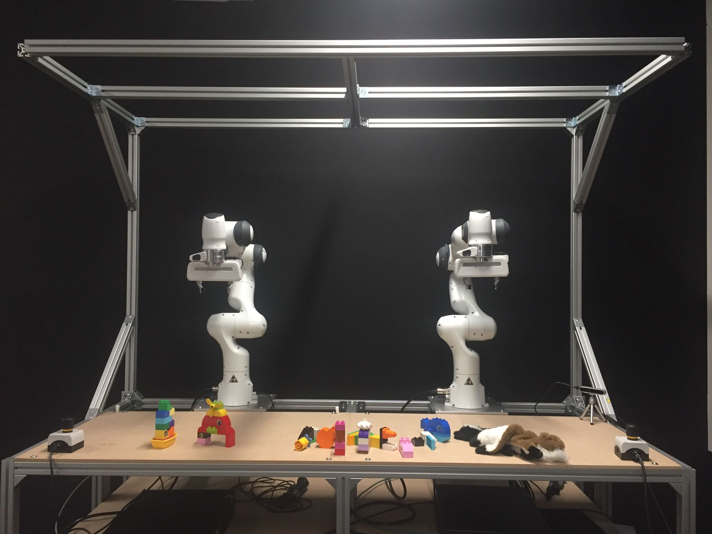

Method at a glance
- Generate target tasksCreate static poses, workspace samples, point-to-point motions, and tracking trajectories.
- Run a common benchmarkApply consistent joint limits, pose conventions, and evaluation criteria across solver integrations.
- Validate executionTest in simulation first and then validate selected safe methods on the real robot.
Schematic summary of the project workflow.
What was compared
The thesis evaluated SimFrame offline and online IK, TRAC-IK, Polymetis offline and online IK, Ranged IK, Frankx IK, and analytical IK. These are geometric or optimization-based control methods, rather than trained neural models. My contribution was the benchmark design, integration and evaluation of the methods, and the analysis of their practical tradeoffs.
KIT’s SimulationFramework supported the point-to-point experiments, while Meta’s Polymetis supported tracking experiments. Simulation provided an initial safety check before selected methods were used on the physical Panda arm.
A task-generated evaluation dataset
The benchmark did not depend on an image database. It generated its own evaluation tasks, including 10,000 random target poses, voxel-based workspace samples, changes of position and orientation, multi-speed circular trajectories, and irregular human-generated trajectories. These complementary settings expose differences that a single solver-success statistic would miss.
- Numerical metrics: runtime, position and orientation error, manipulability, and the thesis’s joint-range measure.
- Execution metrics: reachability, motion success, tracking errors, and dynamic time warping for trajectory comparison.
- Robust summaries: interquartile statistics alongside ordinary averages to reduce the effect of large failure cases.
What the benchmark showed
The study found that solver behavior depends strongly on the task. An analytical method could be extremely accurate when it found a solution while leaving more poses unsolved. Ranged IK offered a strong overall balance in the thesis’s tested conditions, but the tracking results also showed that the surrounding controller can dominate performance.
Joint-limit handling was another important factor. Methods that returned out-of-range joint configurations required clipping before execution, which could change the end-effector error. The comparison therefore treats solver integration and controller behavior as part of the practical problem, rather than reducing the result to one universal ranking.
Project visuals



Related resources
Based on my bachelor’s thesis “Benchmarking Cartesian Space Controllers for Franka Emika Robot” and the retained analytical-IK integration.